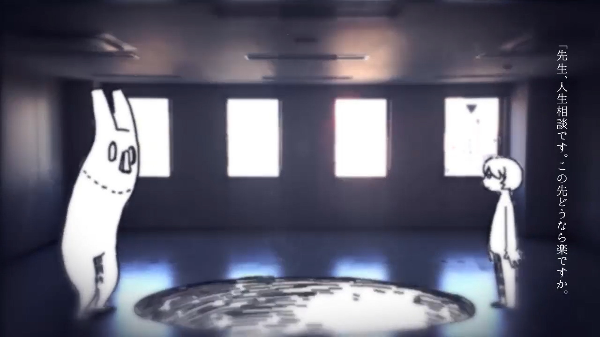

初夏来了。
暮春初夏、夏至未至的这个时候总是会独具一种属于这个季节的气质。n-buna，我最喜欢的音乐家之一，他曲里词间独有的拿式忧郁，就常寄于这个季节的”拿式夏天”中。而我，也在战线冗长又焦躁的Mid-term结束的今天，在行走于人生前夜的今天，在心里破了个洞的今天，在闷热无风的炎日和黄昏薄暮的骤雨的今天。想起了拿不拿的这首歌《ヒッチコック（hitchcock）》，并再度为其泪流满面。
单曲循环良久后，满腔拿式忧愁不得纾解，便决意趁这来之不易的闲暇夏夜，补上欠着拿不拿的这篇阅读理解，并藉此一抒心中块垒。
写在前面：
①hitchcock（希区柯克），著名电影导演、制片人，以出人意料的悬疑著称的表现主义电影家。②下划线为原歌词。
“因雨的气息而感到怀念究竟是为什么呢？”
“因夏日的接近而心跳加速究竟是为什么呢？”
hitchcock这首歌，在我看来，就是写给刚刚走出青春与理想的童话，迷茫彷徨于人生前夜的年轻人的（比如我呜呜呜）。初夏承载着太多太多的回忆和情绪，在今日薄暮的骤雨中，我也怀念起了昔日的初夏，那个时候的自己总在教学楼高处，看着碌碌的人群撑着伞，踏着微湿的水泥路面与蝉鸣来来往往。
“一被人嘲笑眼泪就要涌出究竟是为什么呢？”
“即使如此 ‘总有一天能够获得回报’ 这样想是否可以呢？”
但是过去终究已经过去，现在的自己，承受着莫名的却又莫大的压力，艰难地在人生之路上走走停停，心理压力已经接近极限的自己，即使接受一丝来自外界的漠视，也难过得想要哭出来，却只能用努力终能获得回报之类的话语抹掉眼泪，安慰支撑着自己继续前行。
“老师 我想和你谈谈人生 以后该怎么做才能轻松呢？”
“你会对我说 ‘这种事谁也不知道’ 这种话吗？”
“看吧 并非是自己 渴求遭受苦难”
“想要什么都不做地活下去 只愿抬头仰望蓝天”
“这果然是任性的妄言吗？”
已经无法忍受连轴转的庸常的我，在遭受着”不努力就要被淘汰”的苦难的我。已经越来越坚持不住了。现在的我只想要什么不做地活下去，只想像过去一样在高处看着蓝天、云雨、行人，轻松地活下去。难道这只能是一种任性的妄想吗？
“即使内心痛苦万分 也要说谎话 究竟是为什么呢？”
“幸福的文字中含有¥（金钱） 究竟是为什么呢？”
“幸抽掉一横就变成辛 这是刻意为之的吗？”
内心早已痛苦万分的我，却不能倾诉一切，只能每日挂着假面与笑脸，说着与内心不相符的谎言”正常”地活着。为了追求幸福的自己，却在追求的途中陷入金钱需要和辛劳的巢穴中，而变得更加痛苦的日子，这是无法摆脱的吗？
“青春的背后被贴上了价格的标签”
“在心底的某处期待着像希区柯克那样的悬念”
青春被贴上了价格的标签，所谓青春该做的正确的事，都成为了追求未来的价码。所以我们被迫着在青春做着自己不喜欢的事：努力学着自己不感兴趣的知识、内卷、加压……被迫做着这些事情的自己，其实也特别希望着自己能迎来希区柯克那样的悬念式的发展吧~比如天降横财的财富自由，又如突然出现的美满幸福的爱情，或者突然死亡（这样就可以不用在人生之夜中努力行走了）。可是自己也清楚地明白，这只不过是幻想罢了。
“老师 我已经无所谓了 活着本身就是痛苦的吧”
“尼采和弗洛伊德都没有找到填补空洞的方法啊”
“只想在夏日的气息里合上双眼”
“用手指描绘出云层的高度”
“只希望看着回忆 这也只是我的任性吗？”
所以啊，没有希区柯克式悬念的我们，生活只能在辛劳和苦难中前行着，活着本身而言只能是痛苦的吧。那么，不能让我自由任性地在夏日气息中合上双眼、描绘着云层与天空，回忆着过去的无忧自在的人生，这样的人生的意义又是什么呢？这个问题就连尼采和弗洛伊德都没想明白啊。
“老师你曾经的梦想是什么呢？”
“是变成大人之后就会忘掉的东西吗？”
曾经怀揣的大大的梦，一定会在成为大人的人生前夜这段时间，被生活所磨灭吗？这样成为的大人，还是我想要成为的大人吗？
“未来并非是无论怎样都可以的啊”
“只有现实在明明灭灭”
我不想要成为那样的大人啊，拥有那样的未来啊。可是又能怎么办呢？明明灭灭的现实下，我还是只能遭受着苦难，为了基于金钱之上的幸福，辛劳又庸常地努力着。最终不可避免地走向这样的人生。
所以啊，能不能赐予我一个希区柯克式的结局呢？无论是突然而至的幸福也好，突然而至的死亡也罢。也唯有这种带有悬念式的发展，才能够逃离这样充斥着痛苦苦难的人生现状啊。